Guide
How to use each feature, where to find it, and which setting controls it.
Getting started
- Install Tampermonkey in Chrome, Edge or Firefox.
- In Chrome or Edge: open the extensions page (
chrome://extensionsoredge://extensions), click Details on Tampermonkey and turn on Allow User Scripts. Firefox doesn't need this. - Click Install on the home page and confirm in Tampermonkey.
- Open or reload war.app. A small version number appears in the bottom-right corner: the script is running. (In a game it shows only while the game is a lobby, so it doesn't cover the game's buttons.)
Updates install by themselves; Tampermonkey checks about once a day. When a newer version is out, the version number in the corner turns into a gold Update to … link, if you'd rather not wait. Every change is in the changelog.
The settings menu
Your account menu (your name, top right) → Muli's Userscript, or click the version number in the bottom-right corner.
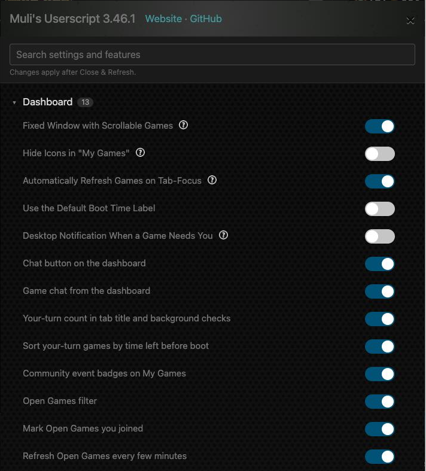
- Sections by area (Dashboard, Games, Tournaments, Ladders & community, Profile, Clans, Idle, Forum, Maps & levels, Other, Third-party data, Backup) fold open and closed; each shows how many items it holds.
- Every feature has its own switch, next to the settings for that area. Turn off anything you don't want; nothing else changes.
- The search box at the top finds a setting or feature by name.
- Backup → Export / Import copies your settings, bookmarks, game notes, mutes and hidden threads to another browser or computer. Settings are kept per browser, so use this when you switch.
Dashboard
war.app → Multi-Player → Dashboard
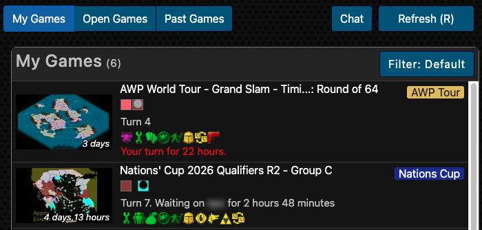
Layout
My Games, Open Games and Past Games become tabs in a fixed window that scrolls on its own, with your bookmarks and the sidebar boxes on the right. Fixed Window with Scrollable Games (on) turns this off if you prefer war.app's long page.
Refresh
Press R (not while typing) or click Refresh (R): both game lists and their counts update without reloading the page. Automatically Refresh Games on Tab-Focus (on) also refreshes when you come back to the tab after a while.
Open Games refreshes by itself every 5 minutes while it's on screen, so new games show up on their own. It waits while your pointer is over the list or the Filter panel is open, and doesn't run while another tab is shown or the browser tab is in the background. The last line of the Open Games Filter panel changes the minutes (0 = off). Refresh Open Games every few minutes (on).
Your turn
- The tab title counts the games waiting for you: "(2) Multi-Player Dashboard". While the tab is in the background it checks every 5 minutes.
- Desktop Notification When a Game Needs You (off) shows a notification when a game becomes your turn; your browser asks for permission once.
- Your-turn games are sorted by the time left before you're booted, most urgent first.
Event badges and Chat
- Games that belong to a community event get a badge at their top right: blue for custom.wl-stats.com events ("Nations Cup", "P/R League", "Titled Tuesday"), gold for the AWP World Tour. Hover it for the full name, click it to open the event.
- Chat opens war.app's chat rooms (Global, Clan, groups) straight from the dashboard.
A game's chat from the dashboard
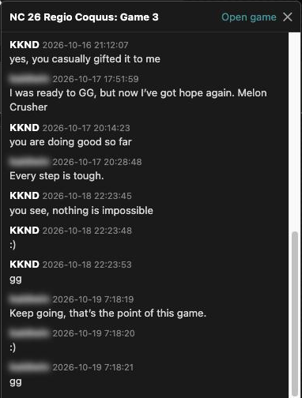
- Click 💬 Chat at the bottom right of a game in My Games.
- A panel opens at the bottom right of the dashboard: "Loading the game…", then the game's last 20 messages, newest at the bottom. It takes as long as opening the game, because the game loads hidden behind the dashboard, but you stay where you are.
- To read further back, click Show all above the messages ("Showing the last 20 messages of 57"). The panel also loads what the game keeps behind war.app's "Load Older Messages".
- Type in the box and press Enter to send (Shift+Enter for a new line). The message goes out through the game's own Send button, exactly as if you'd written it in the game. In team games, Public and Team switch between the two chats.
- Close it with ✕, Escape or the button again. Open game takes you into the game, for private chat.
Muted players show as a faint "muted" line and block-listed messages are left out, as in the game. In a finished game, or one you're not in, the panel is read only. Game chat from the dashboard (on; settings → Dashboard).
Bookmarks
The Bookmarks box in the sidebar keeps links you choose. Click + to add one, or use the Bookmark link that appears on forum threads, tournaments and community levels. Bookmarks can be edited, reordered, deleted and set to open in a new window.
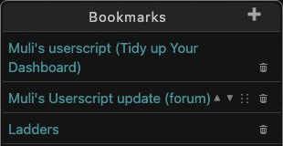
Open Games filter
Dashboard → Open Games, or Multi-Player → Open Games → Filter in the header
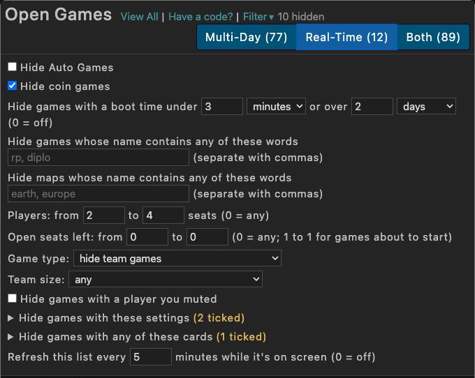
- Hide Auto Games and coin games.
- Boot time under … hours: hides games that boot too fast for you (0 = off).
- Words: games whose name contains any of them are hidden, as whole words, separated by commas ("rp, diplo").
- Players from … to …: seat count (0 = any).
- Team games: show, show only team games, or hide them.
- Hide games with: Commerce, local deployments, manual or automatic distribution, cards, wastelands, fog other than normal, no-split, and more, read from each game's setting icons.
The filter is remembered and also applies to the games that load later with "Show more". Games you're already in get a green Joined badge.
In your games
Any game: war.app → a game's page
Notes in a game
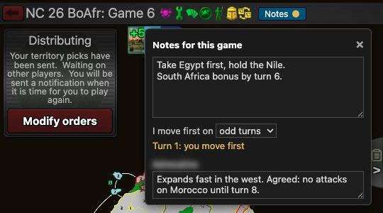
- Click Notes, next to war.app's Game button at the bottom left (with the chat open, it sits left of the Chat tab).
- Write anything: plans, picks, deals. It saves as you type; "Saved" confirms it.
- Choose I move first on odd or even turns, and the panel tells you each turn: "Turn 7: you move first".
- Each other player has a box of their own.
Only you see your notes. A gold dot on the button means the game has notes. Click the map (or anywhere else) and your keys go back to war.app; click in the notes to type again.
Chat in a game
- The whole chat: the script presses war.app's "Load Older Messages" for you until the whole chat is there, then shows the newest message. Tip: with war.app's App Settings → Chat Dialog unchecked, it loads in one go.
- Read aloud: click the faint 🔊 at the left of a message to hear it and the ones after it; click ■ to stop. Read New Chat Messages Aloud (off) reads new messages from others as they arrive, so you can listen while entering orders. Chrome only speaks after you've clicked somewhere on the page.
- Tag a player: type @ in the chat box and pick a name from the list (mouse, arrow keys, then Enter or Tab). While the list is open, Enter picks the name instead of sending.
- Mute: hover a message and click 🔇 to hide that player's messages; they never know. See Chat rooms to unmute.
- Mentions: messages with your name are outlined in gold.
- Private chat list: Chat → Private lists the players still in the game first, A to Z, then a gold line and the players who are out.
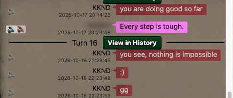
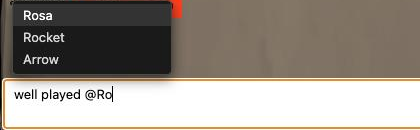
Player pace in a lobby
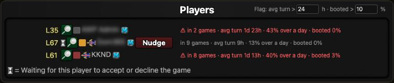
24 h, booted > 10 % at the top right">War.app decides who may join a game, so the script can't keep anyone out. In a game's lobby it shows each player's pace instead, read from their profile:
- in 7 games: how many multi-day games they're in, as their profile says. War.app doesn't always update this in time, so it's never flagged.
- avg turn 1d 13h: their average multi-day turn.
- 40% over a day: the share of their multi-day turns that took more than a day. It covers all their games, not this game's boot time.
- booted 3%: how often they were booted in their recent games.
In a real-time lobby (a boot time of an hour or less) the line shows real-time turns instead: "avg turn 3m 20s · 59% over 2 min · booted 3%", with the limit in minutes (3 at first).
Hover a line for the long version and why it's flagged, click it for the profile. Flag: avg turn > 24 h · booted > 10 %, at the right of "Players", marks players with a longer average turn, or a higher boot rate, in red with ⚠ (0 turns either off); as the host, remove them with war.app's Add/Remove Players. Player pace in game lobbies (on; settings → Games).
Ask before committing
Ask Before Committing Orders (off; settings → Games): Commit and Autopilot's Run+Commit ask "Commit your orders for this turn?" first, against accidental commits. The question is your browser's own dialog: OK commits, Cancel goes back to your orders.
Past Games
war.app → Multi-Player → Past Games
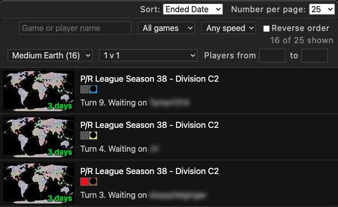
- Search a game name or a player's name.
- State: in progress, your turn, lobby, finished, or games you're out of (surrendered, booted…).
- Speed: real-time (boot time of an hour or less) or multi-day.
- Map: the maps of the games on the page, by name, with how many games each. The names come from war.app's map list, read once a week. War.app shows most finished games with a picture of the game instead of the map: they're under Map not shown until you click Find the maps of N games, which opens each in the background (about a second and a half each; Stop stops it) and remembers its map for good.
- Players: 1 v 1, more than 2 players, or a from–to number of players.
- Reverse order flips the list.
It filters the page war.app shows. To search more games at once, set war.app's Number per page to 200. The state, speed, map, players and order are remembered; the search box starts empty. A game's settings (No-Split, cards…) and its map's size can't be filtered: the Past Games page doesn't carry them.
Chat rooms
Dashboard → Chat, or Community → Chat (Global, Clan and your groups)
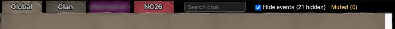
- Hide events (ticked by default): war.app's notices such as "Joined the group", "Removed from the group due to inactivity" and clan war rewards are taken out, and the chat closes up. The bar counts them; untick to see them again.
- Search chat: type a word or a player's name; only matching messages stay ("9 found"). Clear the box to see everything.
- Mute: hover a message, click 🔇 and confirm. That player's messages disappear here and in game chats (where they become a faint "muted" line). Muted (N) lists everyone you muted, with Unmute.
- Mentions: messages with your name or @name are outlined in gold. A tab you're not looking at shows "@1" when someone mentions you there.
- @ tagging and read aloud work as in game chat; hover a message for its 🔊.
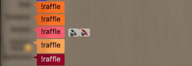
Ladders, community events and leaderboards
Community ladders & leagues
war.app → Multi-Player → Ladders, below war.app's four ladders
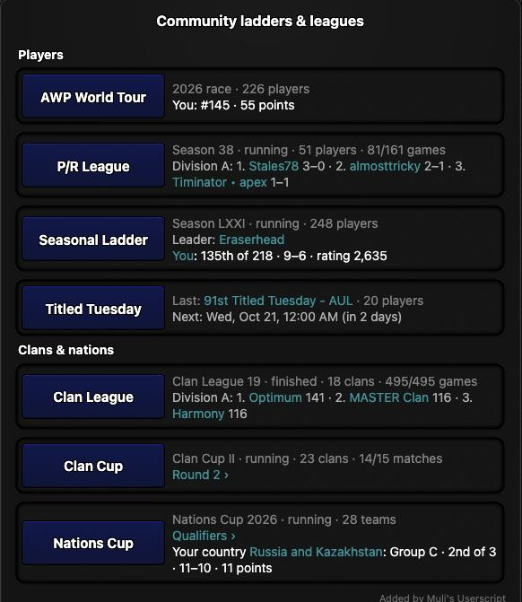
The AWP World Tour race, P/R League, the Seasonal Ladder, Titled Tuesday (the last event, and the next one in your time zone), Clan League, Clan Cup and Nations Cup. Each line shows the current season, how far it is, the leaders, and your place or your clan's or country's. Buttons open the series on awp.wl-stats.com or custom.wl-stats.com; a series taking signups says until when.
Your friends in a team ladder proposal
A team ladder (2v2, 3v3) → Join Ladder → Join with Team
war.app lists your friends 40 at a time. Type part of a name in Search your friends, at the right of "Friends": every match on any page is listed, best match first, with its level and page ("locked" for friends who haven't unlocked the ladder yet). Click one to go to its page, where its name turns gold and its Select button is outlined, then click Select as usual. The first search reads all your friends (under a second for about a hundred) and leaves the list on the page you were on. Nothing is sent until you press war.app's own button to create the proposal. Search your friends in a team ladder proposal (on; settings → Community).
Community Events
war.app → Multi-Player → Community Events
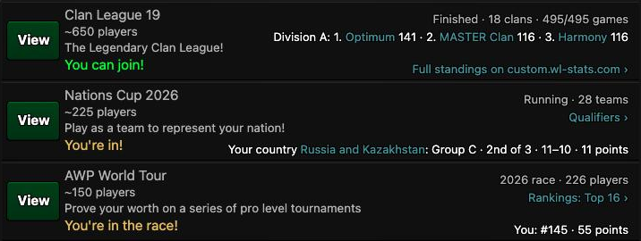
Cards for events on awp.wl-stats.com and custom.wl-stats.com show the current edition and its standings, with links to the full standings. Where you take part, war.app's "You can join!" becomes "You're in!", "You're signed up!" or "You took part".
Your rank on Quickmatch leaderboards
war.app → Multi-Player → Quickmatch → Leaderboards
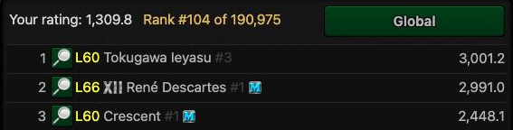
Next to "Your rating" the script shows your rank, for Global and for each template you pick. It takes a few seconds the first time (it looks you up page by page), then it's remembered for 10 minutes. "≈" means it counted the players above your rating.
Tournaments
Any tournament's page
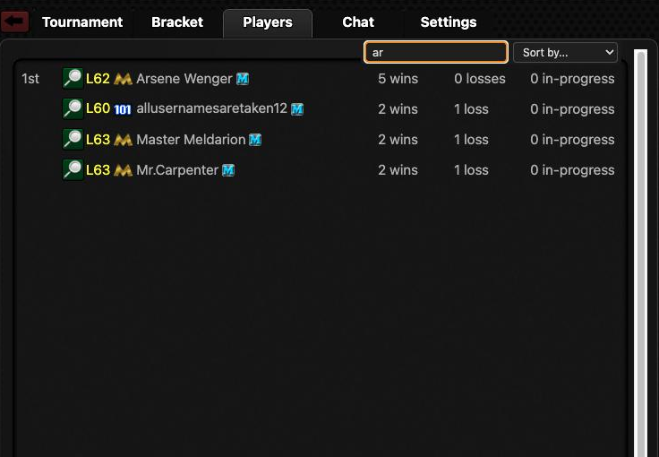
- Players tab: type in the search box to bring matching players to the top; Sort by wins, losses or name.
- Bookmark next to "Created by" saves the tournament to your bookmarks.
- For community series (Titled Tuesday, War Gaming Live, P/R League…), a link to the tournament's page on custom.wl-stats.com.
- To find yourself in the bracket, use war.app's own Find… on the Bracket tab.
Profiles and clans
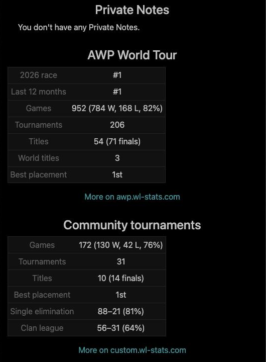
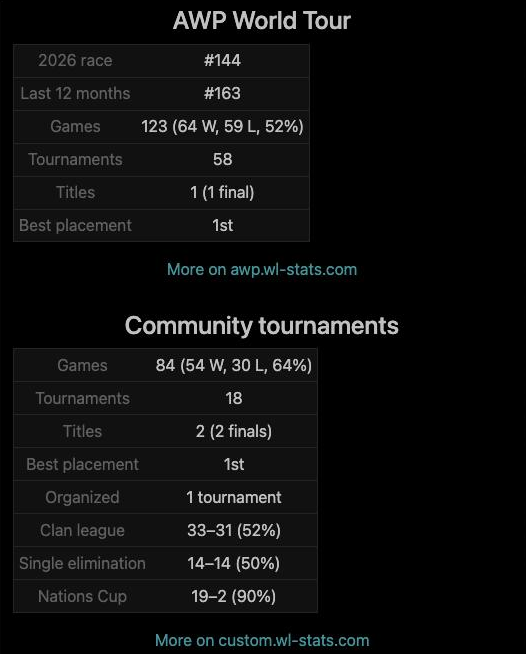
- AWP World Tour: race place, 12-month rank, games and win rate, tournaments, titles, with a link to awp.wl-stats.com.
- Community tournaments: games, titles, best placement, tournaments organized, and records in the formats the player plays most.
- Private notes: the note you keep about the player on war.app (the profile's "Private Notes" link), shown on their profile. Show Private Notes on Profile (on).
- Click a stat section's heading to fold it.
Clans
- Clan list search: a search box on Community → Clans.
- Community events on clan pages: below Clan Wars, the clan's place in Clan League, Clan Cup and the other community series, and its titles.
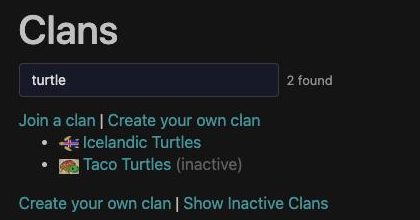
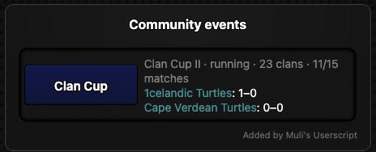
War.app Idle
war.app → Idle. The helpers only show information and ask before risky clicks; nothing plays the game for you. Each has its own switch under settings → Idle.
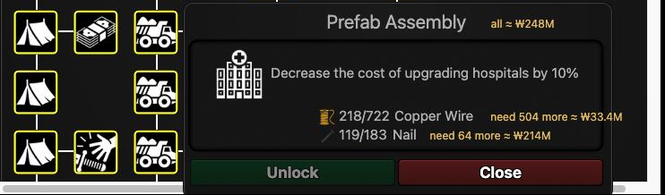
- Tech costs: open a tech in the Techs tab. Beside each item you're short of: "need 504 more ≈ ₩33.4M", at the cheapest market on the level, with the price rising as you buy, as Idle's markets do. With two or more items short, the total is on the tech's name line, in red when it's more than your money.
- Market typos are caught: if you type more than you can afford (say "121p" instead of "1210"), the script asks before Idle spends all your money. The question is your browser's own dialog; Cancel leaves the market untouched.
- Powers and artifacts ask first: Use and Activate name what you're about to use. These questions are your browser's own dialogs.
- Artifacts: in the artifact window, an equipped artifact with a better unequipped copy gets a gold "Better: …" tag. List shows every artifact sorted by rarity or name; store marks one you never want used.
- Time to afford next to upgrades you can't afford yet, and Best value on the best army camp for the money.
- Log (next to the zoom buttons) lists the pop-ups Idle showed on the map, newest first.
- Volume slider next to war.app's speaker icon.
- Tab title: "(2) Idle" when something waits for you (powers, an artifact, a tank, a battle, the daily bonus, the coin wheel). Idle: Desktop Notification When Idle Needs You (off) notifies you while the tab is in the background.
- Second-tab warning when Idle is open twice in the same browser.
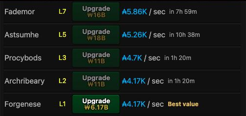
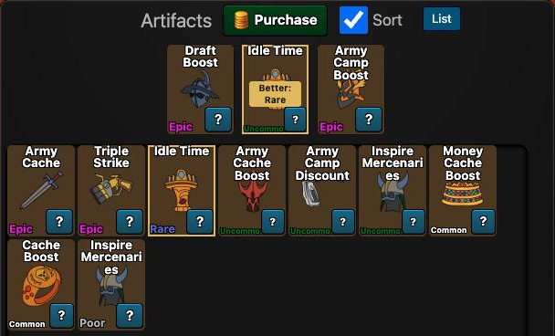
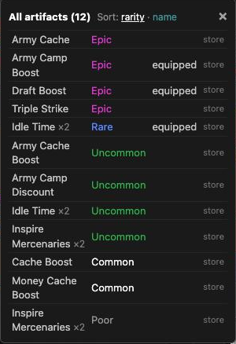
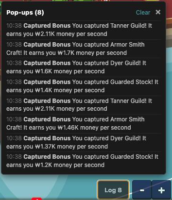
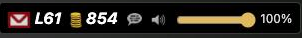
Forum, mail and more
Forum
- Formatting toolbar above the reply box: bold, italic, code, image, line, quote, list.
- Hide a thread with the eye icon on a forum list. Automatically Hide Off-Topic Threads and Automatically Hide War.app Idle Threads (off) hide whole categories. Reset Hidden Threads in the settings menu brings them back.
- Links to single-player levels in posts become small preview cards.
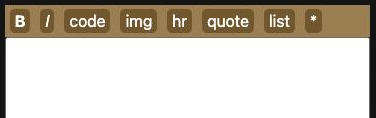
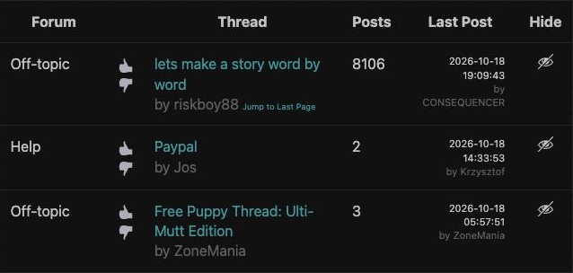
Your mail page
- Filter by player: threads started or last answered by that player, across all pages.
- Filter by words: all the words you type, in the subject, or in the first 15 words of each thread. The first time you search the first words, the script reads your threads once (about half a minute for 400 threads); Mail: Search the First 15 Words of Each Thread turns this off.
- Last post from … to …: a date range. The filters combine.
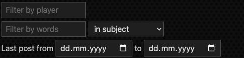
Player Search
Community → Player Search
- Results come as Best match (exact names first, then names starting with what you typed, then the rest, each by level, with new L1–2 accounts last; a tag like "[ BTF] " at the start of a name doesn't count), or by level or name.
- Hide level 1–2 accounts (on at first; untick to see them), show only players in a clan, or set a minimum level.
- Tags: "You", AWP World Tour ranks, and "Blocked" for players on your block list.
- Paste a profile link or a player ID and press Search to open that profile. An empty search box offers your recent searches.
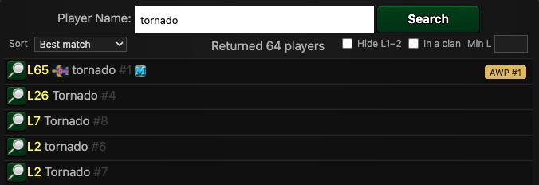
Other pages
- Block list: a player count and a search box.
- Maps: a search box on the maps list.
- Common Games with a player: a sortable table and your head-to-head record.
- Points: your total points earned.
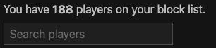
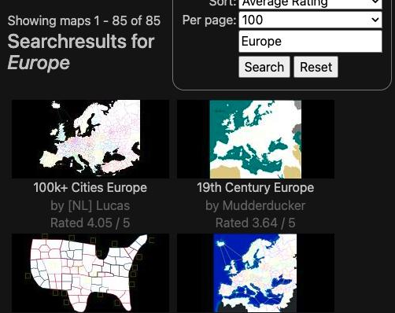
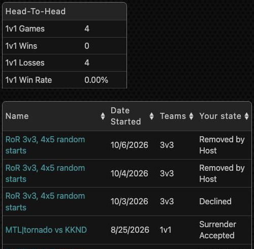
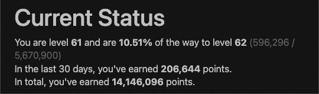
From war.app's Feature Requests
Requests from war.app's Feature Requests forum that the script covers, with the request's thread and where this guide explains it. The script does them on your computer only; war.app itself is unchanged.
Games and dashboard
- Provide Space for In-Game Notes (188 votes): Notes in a game. How to use it
- Dorex's quality of life updates: Border in PMs (84 votes): Private chat list: players still in the game first. How to use it
- Search/Sort Functionality for Past Games (51 votes): Past Games search and filters. How to use it
- Better Past Game Filtering & Sorting: Past Games search and filters. How to use it
- Dorex's quality of life updates: Text to speech (33 votes): Read chat aloud, in games and chat rooms. How to use it
- Are you sure you want to commit your orders? (27 votes): Ask before committing (a setting, off by default). How to use it
- Showing more posts in game chat windows: The whole chat in a game. How to use it
- add more open games filters: Open Games filter: seats, team games, settings. How to use it
- Leaderboards: Include Rank with Rating: Your rank on Quickmatch leaderboards. How to use it
- Sort players by level in Player Search results: Player Search: best match, level, filters. How to use it
- Additional filters for joining open games: each player's pace in a lobby, to remove slow players yourself (war.app decides who may join). How to use it
Chat
- Mute Button: Mute a player in chat rooms and game chat. How to use it
- QOL - Tagging Players in Public Chat: Mentions marked, and @name suggestions. How to use it
- Add Button to Open Chat from MP Dashboard: A Chat button, and a game's chat on the dashboard. How to use it
War.app Idle
- Ability to click a tech and pay for it from market (71 votes): What a tech is missing and its market cost (you still buy it yourself). How to use it
- Warning when using a lower-rarity artifact: Better artifact copies pointed out. How to use it
- Make "storage" section for never used WZI artis: Artifact storage marks. How to use it
Planned: Idle: Freely resizable info panel and Add "Arenas" button. Tried and taken out again: Idle: view only or double tap to conquer, because Idle shows what's in a tile only when you take it.
Troubleshooting
- Nothing changes on war.app. Look for the version number in the bottom-right corner (on the dashboard, say; a started game doesn't show it). If it's missing: check that the script is on in Tampermonkey, and in Chrome or Edge that Allow User Scripts is on in Tampermonkey's Details. Then reload war.app.
- Tampermonkey says "Reinstall" instead of "Update". You already have that version. Right after a release, GitHub can serve the old file for a few minutes; try again a little later.
- A feature is in the way. Turn it off in the settings menu; each one has a switch.
- Two copies running. If Muli's old version is still installed, turn it off in Tampermonkey.
- Something doesn't work. Tell KKND, who maintains the script now, not Muli, its original creator. Press Ctrl+Shift+2 on any war.app page to open the script's log, and reply in the forum thread with the page and what the log says. Issues are also welcome on GitHub.
Privacy: the script doesn't send your username anywhere. Community stats come from awp.wl-stats.com and custom.wl-stats.com without your war.app login. MTL stats and community level records use Muli's old server, so they're off by default (Load MTL Ladder and Community Level Records (via maak.ch)).